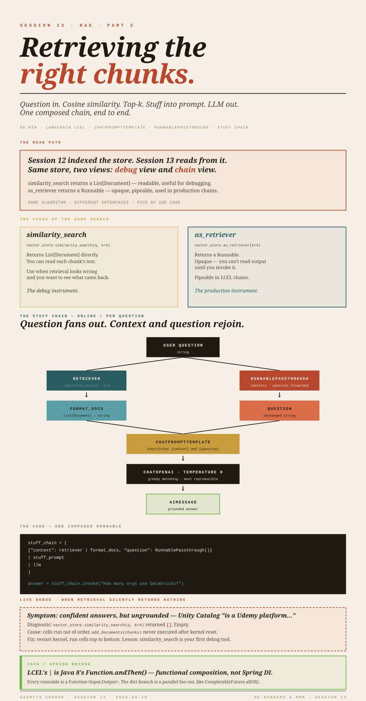

RAG, Part 2:Retrieval.
Question in. Cosine similarity. Top-k chunks. Stuff into a prompt. LLM out. One composed chain, end to end.

Indexing is done. Now we read.
Session 12 built the indexing pipeline: a 57-page Databricks PDF was loaded with PyPDFLoader, split into 90 chunks by RecursiveCharacterTextSplitter, embedded with OpenAI's API, and stored in a vector store. At the end of that session the store sat there full of (id, vector, metadata, page_content) tuples, waiting to be queried.
This session is everything that happens after a question arrives: how the question gets matched against those vectors, how the matched chunks are stuffed back into a prompt, and how an LLM call is wrapped around the whole thing as a single composable chain.
Four pieces this session adds:
- Retriever vs. similarity search — two views of the same store, one for production, one for debugging.
- The chain — composing
retriever → format → prompt → LLMwith LangChain's LCEL pipe syntax. RunnablePassthrough— how the user's question gets forwarded through the chain alongside the retrieved context.- A live debug story — what it looks like when retrieval silently returns nothing, and how to spot it.
Forward look: re-rankers, MMR, and prompt engineering (few-shot, chain-of-thought, ReAct, role-task-goal) are previewed and explicitly deferred to Session 14.
Session 12 was indexing — equivalent to populating a database at deploy time. This session is the request-time read path: controller (your question) → service (the chain) → repository (the vector store retriever) → back up with a response.
The piece that's unfamiliar is that the "repository" returns by vector similarity, not by primary key or by an indexed column.
Two ways to look at the same vector store.
A LangChain vector store gives you two APIs over the same indexed corpus. They do the same underlying work — embed the query, compute cosine similarity against every stored vector, sort, return top-k — but they expose it differently.
similarity_search — the debug view
docs = vector_store.similarity_search(question, k=4)
for d in docs:
print(d.page_content[:200], d.metadata)Returns a plain List[Document]. You can read each chunk's text immediately. This is what you reach for when retrieval looks wrong and you want to see which chunks came back. It does not compose into a chain.
as_retriever — the chain-pipeable view
retriever = vector_store.as_retriever(search_kwargs={"k": 4})Returns a Retriever object — an opaque callable that, when invoked, runs the same search and returns the same List[Document]. The difference is that a retriever is a Runnable, so it slots into the | (pipe) composition syntax LCEL uses. You can't read its output directly until you invoke it.
Use as_retriever in production chains. Use similarity_search when you want to see what got returned. They are not different algorithms; they are different shapes of the same call.
What k is
k is the number of nearest chunks to return. k=4 is the working default in this codebase. There is no theoretical "right" k; it depends on chunk size and how much context the model needs. Common range: 3–10.
What's actually happening underneath
Cosine similarity is one minus the angle between two vectors, normalized so identical-direction vectors score 1.0 and orthogonal vectors score 0. The geometric intuition: text with similar meaning produces vectors pointing in similar directions, regardless of length. Magnitude doesn't matter; direction does.
The 50 (or 90, or 90,000) chunk vectors don't have to be re-embedded — they were embedded once during indexing and now sit in memory. Only the question is embedded on each query.
as_retriever() returns something that looks like a JpaRepository.findByX() method — you call it, you get a list of entities back.
The mechanism is what differs: the "lookup" is not an indexed B-tree scan on a column; it is a brute-force or approximate-nearest-neighbor scan over high-dimensional vectors. For 90 chunks that's instant; for 90 million you'd reach for an ANN index (FAISS HNSW, ScaNN) — but the interface the retriever presents to the rest of the code is the same.
Building the chain — piece by piece.
The goal is to wire up: "take a user question, retrieve the top-4 relevant chunks, paste them into a prompt template alongside the question, call an LLM, return the answer." In LangChain this is one composed Runnable.
from langchain_openai import ChatOpenAI
from langchain_core.prompts import ChatPromptTemplate
from langchain_core.output_parsers import StrOutputParser
from langchain_core.runnables import RunnablePassthrough
# 1. The prompt template — text with two named slots.
stuff_template = """Answer based on the context below.
Context: {context}
Question: {question}
Answer:"""
stuff_prompt = ChatPromptTemplate.from_template(stuff_template)
# 2. The LLM. temperature=0 ⇒ greedy decoding, least creative.
llm = ChatOpenAI(model_name="gpt-3.5-turbo", temperature=0)
# 3. Turn a List[Document] into one string the prompt can interpolate.
def format_docs(docs):
return "\n\n".join(doc.page_content for doc in docs)
# 4. The chain itself.
stuff_chain = (
{"context": retriever | format_docs, "question": RunnablePassthrough()}
| stuff_prompt
| llm
)
# 5. Run it.
answer = stuff_chain.invoke("How many organizations worldwide use Databricks?")ChatPromptTemplate — the parameterised prompt
A prompt template is a string with {variable} placeholders. ChatPromptTemplate.from_template(...) wraps that string in a Runnable so it can be piped. When this runnable is invoked with a dict like {"context": "...", "question": "..."}, it substitutes the variables and returns a message ready to send to the model.
This is the same idea as Spring's @Value("${some.prop}") placeholder substitution, or a MessageFormat template — declare slots in a string, fill them in at runtime with a parameter map. The only twist is that the rendered string is then handed to an LLM rather than written to a log.
The LLM with temperature=0
temperature controls how the model samples from its output distribution. Zero means: at each token, pick the single most likely token deterministically. For a Q&A-over-documents task you want this — you don't want creative paraphrasing, you want the same answer every time for the same context. Higher temperatures (0.7–1.0) are for writing, brainstorming, code generation when you want variety.
This is also why an LLM is not a database lookup, even at temperature=0: it still generates token-by-token from learned distributions, it just commits to the argmax each step. Two different model versions, two different fine-tunes, or even two different sampling implementations can give different outputs from the "same" greedy decoding. Determinism here is best-effort, not contractual.
format_docs — collapsing retrieved chunks into one string
The retriever returns a List[Document]. The prompt template expects a single string for {context}. format_docs is the glue: it joins each chunk's .page_content with a blank-line separator into one block. No reranking, no filtering, no metadata — just text concatenation. In production you'd often add chunk headers, source citations, or a token budget here.
RunnablePassthrough — forward the input unchanged
Look at the chain again:
{"context": retriever | format_docs, "question": RunnablePassthrough()}This dict is itself a Runnable. When invoked with a single input (the user's question string), LCEL runs both branches in parallel with that same input:
- The
contextbranch sends the question toretriever, gets back 4 documents, pipes them throughformat_docs, ends up with one big context string. - The
questionbranch sends the question throughRunnablePassthrough(), which is a no-op identity function. The string comes out the other side untouched.
The two outputs are assembled into {"context": "...", "question": "..."} and handed to stuff_prompt. That's how a single input becomes two named template variables.
Without RunnablePassthrough(), you'd have to write a tiny lambda that returns its argument. RunnablePassthrough() is just LangChain's named identity function — a marker that says "this slot wants the original input, verbatim."
What "stuff" means in stuff_chain
The name is not arbitrary. "Stuff" is LangChain's term for the pattern of stuffing all retrieved documents into a single prompt and making one LLM call. The alternatives, for situations where the retrieved content is too large to fit:
| Strategy | What it does | When to use |
|---|---|---|
| Stuff | Concatenate all chunks into one prompt, one LLM call. | Default. Works when retrieved chunks fit in the context window. |
| Map-Reduce | Run the LLM on each chunk separately (map), then a final LLM call combines the partial outputs (reduce). | Many chunks, each independently useful; summarization over a long corpus. |
| Refine | Run the LLM on the first chunk to get a draft answer, then iteratively update it with each next chunk. | When chunks are sequential and later ones genuinely refine earlier conclusions. |
The pipe — what | actually does
a | b in LCEL means "run a, take its output, feed it as input to b." It is the LangChain equivalent of Unix shell pipes, or Java 8's Function.andThen(). Every component in the chain is a Runnable; pipes compose them into bigger Runnables. The whole stuff_chain is itself one Runnable you can pipe into yet more things, or call .invoke(), .stream(), or .batch() on.
Think of f.andThen(g).andThen(h) building a Function<Input, Output> out of three smaller functions. LCEL's f | g | h is the same idea, with the added feature that a dict-of-runnables fans out and runs branches in parallel.
It is not Spring DI — there's no IoC container resolving beans at startup. It is closer to functional composition that happens to use the pipe symbol.
The full read path, end to end.
The whole chain rebuilds this graph for every invocation. The store and the index are persistent; the chain run is not. A new .invoke() call has no memory of previous calls unless something explicitly puts prior turns back into the context (chat history, summaries, etc.). That's a follow-on topic.
When retrieval silently returns nothing.
For most of this session the chain returned irrelevant or generic-sounding answers ("Udemy is a platform that allows users to browse and purchase assets…" to the question "what is Unity Catalog?"). The model had clearly seen no relevant context. The chain didn't crash; it just produced confidently wrong answers grounded in the LLM's training data instead of the document.
The diagnostic step was the right one:
vector_store.similarity_search(question, k=4)
# returned: []Empty list. The retriever was returning zero documents. That's a different failure mode from "the model answered wrong" — the model never got any chunks to ground on, so it was free-associating from its pretraining.
Possible causes, in order of likelihood:
- Cells run out of order in the notebook. The
chunksvariable existed, embeddings were created, butvector_store.add_documents(chunks)was never re-run after a kernel reset — so the store was empty even thoughchunkswas populated. This was the actual cause; restarting the kernel and running top-to-bottom fixed it. - Embedding API call failed silently. A bad API key or rate-limit error during indexing can leave the store partially populated.
- Chunking produced empty
page_content. If PDF extraction failed on a particular page, chunks for that page may be blank.
When a RAG system answers wrong, the question is never just "is the model bad?" The pipeline has four upstream layers that can each be silently broken. The fastest debug tool is similarity_search: if it returns documents and they look relevant, the problem is the model or the prompt; if it returns garbage or nothing, the problem is upstream.
A practical guard for notebooks: after vector_store.add_documents(...), assert non-empty results on a known query before building any chain on top.
Re-rankers, MMR, and prompt engineering.
The speaker named several topics he plans to cover next, in two buckets.
Better retrieval — re-rankers and MMR
Re-ranker is a second model that scores the (query, chunk) pairs returned by the first-stage retriever and re-sorts them. The first stage is fast (vector similarity); the second stage is slow but more accurate (a cross-encoder reads query and chunk together rather than embedding them separately). The pattern is universal in modern search: cheap recall, expensive precision.
The speaker called this "the interview topic" for RAG, along with chunking.
MMR (Maximal Marginal Relevance) is a different idea: instead of returning the top-k purely by similarity, MMR returns chunks that are both relevant to the query and dissimilar to each other. Without MMR, the top-4 results may all be near-duplicates from one section of the document; with MMR, you trade a little relevance for diversity, so the model sees broader coverage. Configured via:
retriever = vector_store.as_retriever(
search_type="mmr",
search_kwargs={"k": 4, "fetch_k": 20, "lambda_mult": 0.5}
)lambda_mult=1.0 → pure similarity (same as default), lambda_mult=0.0 → pure diversity. The 0.5 default is a balanced trade.
Prompt engineering techniques
Names the lecturer dropped, with what they actually mean:
| Technique | One-line definition |
|---|---|
| Zero-shot | Just ask the question. Default. |
| Few-shot | Include several example (input, output) pairs in the prompt so the model infers the pattern. |
| Chain-of-Thought (CoT) | Instruct the model to reason step-by-step before answering. Often improves multi-step reasoning. |
| Tree of Thoughts (ToT) | Generalisation of CoT that explores multiple reasoning branches and picks the best — expensive, used for hard search-style problems. (The speaker called this "Tree of Map" — the correct name is Tree of Thoughts.) |
| ReAct (Reason + Act) | Interleave reasoning steps with tool calls. Foundational for agentic systems. |
| Role-Task-Goal | Set a role ("You are a medical coder"), a task ("Map this text to CPT codes"), and a goal ("Return only valid 2025 codes"). Composable with the others. |
These get covered properly next session.
Vectorless RAG
A phrase the speaker used in passing. There's no single industry definition, but in 2025 it's being used to mean "long-context models can sometimes do the job of a vector store by just being shown a lot of documents directly, with a smarter loader doing the relevance work." See Session 12 §2 on context rot for why this isn't a slam dunk — long contexts degrade quality. Treat "vectorless RAG" as an evolving research direction, not an established pattern.
The retrieval pipeline in one screen.
- A vector store gives you two views of the same search:
similarity_searchreturns documents you can read;as_retrieverreturns a chainableRunnable. Use the first to debug, the second to compose. - Cosine similarity turns "find the most relevant chunks" into "find the vectors closest in direction to the query vector."
- A prompt template declares slots; a chain fills them at invocation time.
RunnablePassthroughforwards the input unchanged — the way you keep the user's question available alongside the retrieved context.- The whole thing composes with
|into a singleRunnable. "Stuff" is the default strategy (concatenate chunks into one prompt, one LLM call); Map-Reduce and Refine are alternatives when stuff doesn't fit. - When answers look wrong, the fastest test is
similarity_search— if it returns nothing, the problem is upstream of the model.
Next: re-rankers, MMR, and prompting techniques.
Glossary
- Retriever
- A
Runnablewrapping a vector store's similarity search, suitable for piping into LCEL chains. - similarity_search(query, k)
- Convenience method on a vector store that returns a
List[Document]directly. Not pipeable; useful for debugging. - k
- The number of top chunks returned by the retriever.
- Cosine similarity
- Measures the cosine of the angle between two vectors; 1.0 = same direction, 0 = orthogonal. The standard metric for embedding-based retrieval.
- LCEL (LangChain Expression Language)
- LangChain's declarative pipe-style chain composition; every component is a
Runnable, composed with|. - Runnable
- LangChain's interface for any composable unit (LLM call, prompt template, retriever, lambda). Supports
.invoke,.batch,.stream. - RunnablePassthrough
- A no-op
Runnablethat returns its input unchanged. Used to forward the original input into a downstream component. - format_docs
- By convention, a helper that joins a
List[Document]into a single string for prompt interpolation. - ChatPromptTemplate
- A prompt template with
{variable}slots that get substituted at invocation time. - Stuff (chain type)
- Combine all retrieved chunks into one prompt, one LLM call. The default and simplest pattern.
- Map-Reduce (chain type)
- Run the LLM on each chunk independently, then combine partial outputs in a final LLM call. For when chunks don't all fit.
- Refine (chain type)
- Iterate over chunks, updating an answer at each step. For sequential refinement.
- Re-ranker
- A second-stage cross-encoder model that re-scores retrieved chunks against the query for higher precision.
- MMR (Maximal Marginal Relevance)
- Retrieval strategy that balances similarity to the query against diversity among the returned chunks. Controlled via
lambda_mult. - Temperature
- LLM sampling parameter. 0 = greedy (most reproducible); higher = more variety. For RAG Q&A, use 0.
- CPT Modifier 54
- The worked example used by the speaker. In US medical coding, modifier 54 means "surgical care only" — the surgeon performed the procedure but did not provide pre- or post-operative care. (The transcript's "Modify 54" / "Sergeant Weaver" are mistranscriptions.)
SOURCES
- LangChain Expression Language (LCEL) — python.langchain.com
- LangChain RunnablePassthrough — api_reference
- LangChain vector store retriever (
as_retriever, MMR) — python.langchain.com - LangChain document chain types (Stuff, Map-Reduce, Refine) — api_reference
- Carbonell & Goldstein, The use of MMR, diversity-based reranking for reordering documents and producing summaries (1998)
- Yao et al., ReAct: Synergizing Reasoning and Acting in Language Models — arxiv.org/abs/2210.03629
- Wei et al., Chain-of-Thought Prompting Elicits Reasoning — arxiv.org/abs/2201.11903
- Yao et al., Tree of Thoughts — arxiv.org/abs/2305.10601
- CPT Modifier 54 — aapc.com · cms.gov